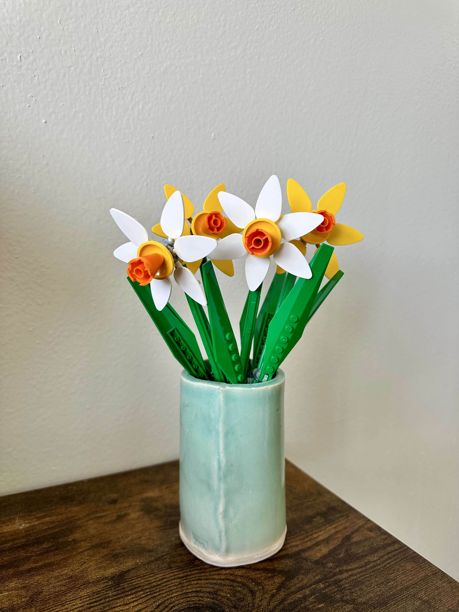

The Lego daffodils are a perfect springtime set to cheer up any space of yours. These adorable, colorful flowers are such a highlight to gaze upon. Since daffodils are only around for a short period of time, this set helps you keep that daffodil joy all year long. The small size of these make this set affordable and quick to build, while also being one of the most satisfying. The colors (yellow and green) are complementary to each other so the set is very pleasing to observe. The palette just makes the flowers pop and cheerful. There is no doubt that this is one of my favorite Lego sets. This build also includes a few unique pieces. One of them being, the petals are solid colored shields. I found this aspect very fun and nostalgic because I remember playing with minifigures and them having little Lego shields. That is one of my favorite things about Legos, realizing how the pieces you played with as a kid can be used in so many different ways to build and create. Another fun aspect of this set is the petals can rotate in a circle around the center. A little bit of movement makes this simple appearing set so much more interesting. However, a criticism I have of this set is the movement of the whole daffodil bloom. The way the set is designed, the daffodil bloom moves with gravity and can rotate 360 degrees. This makes it difficult to display them when you want the blooms facing a certain way. The blooms just move naturally and it can be annoying trying to get them to look how you want them to. But overall, this small Lego set is a special edition to your collection. Everything about it is so cute and dainty. It truly brings the feeling of spring and sunshine to anyplace you decide to put it.
